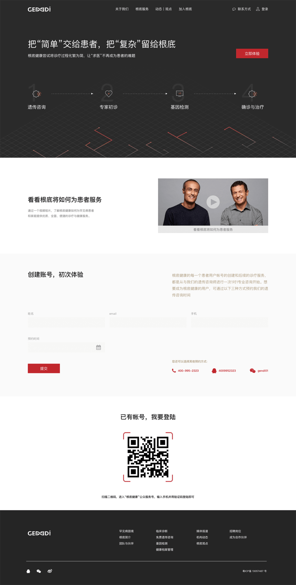
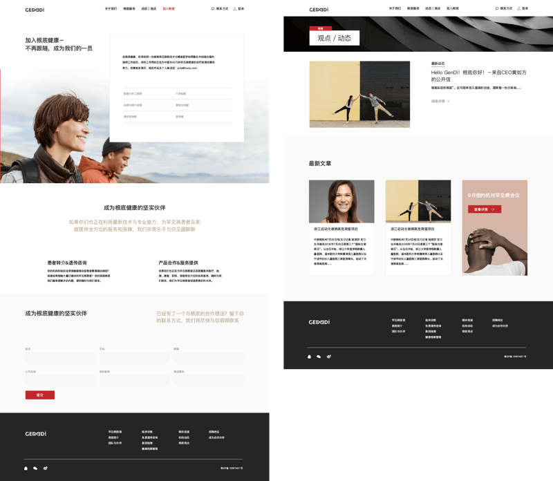
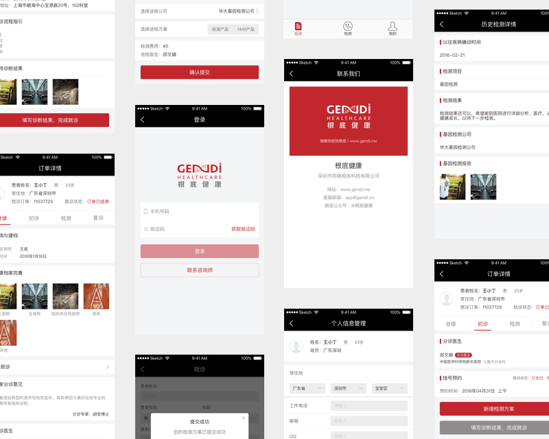
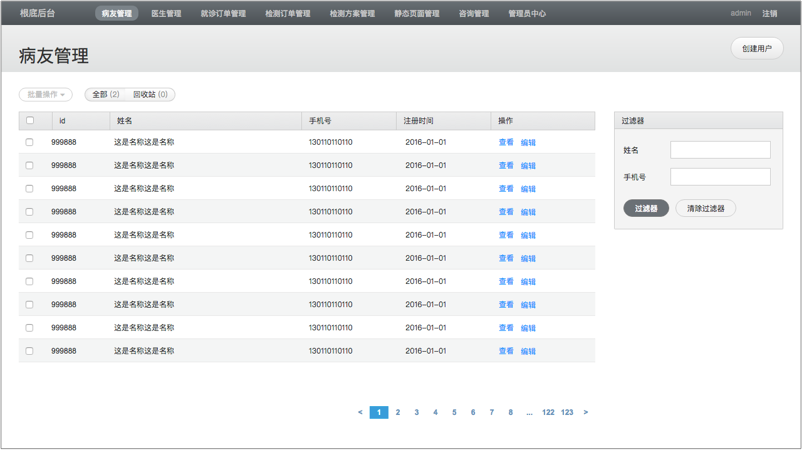

微信关注并登录引导页

加入根底与博客文章

部分UI设计展示（微信端H5）

病友管理、医生管理、检测机构管理的后台UI设计展示
http://www.gendi.me（需求方业务转型，网站已下线）
http://www.gendi.me/（需求方业务转型，网站已下线）
医疗健康
根底健康是一家数据驱动的生命健康科技服务初创公司，公司的业务关注占人口近 10% 的单基因遗传病的患者 /家属群体，目标是成为遗传病、罕见病诊治与交流的第一平台。项目主要目的是通过这个微信服务号平台，连接罕见病患者、医院医生和基因检测机构。患者和医生通过微信公众号注册并登录网站，帮助罕见病患者能够更好的获取基因检测的方式。
产品负责人、微信端web（医生端和患者端）、管理后台、企业官网